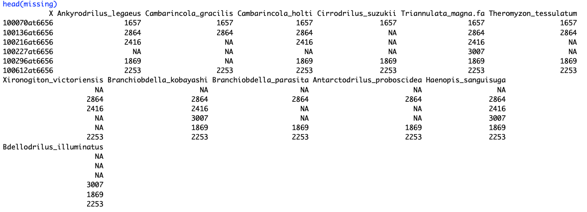
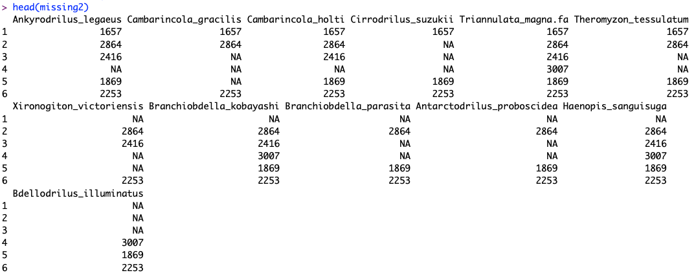
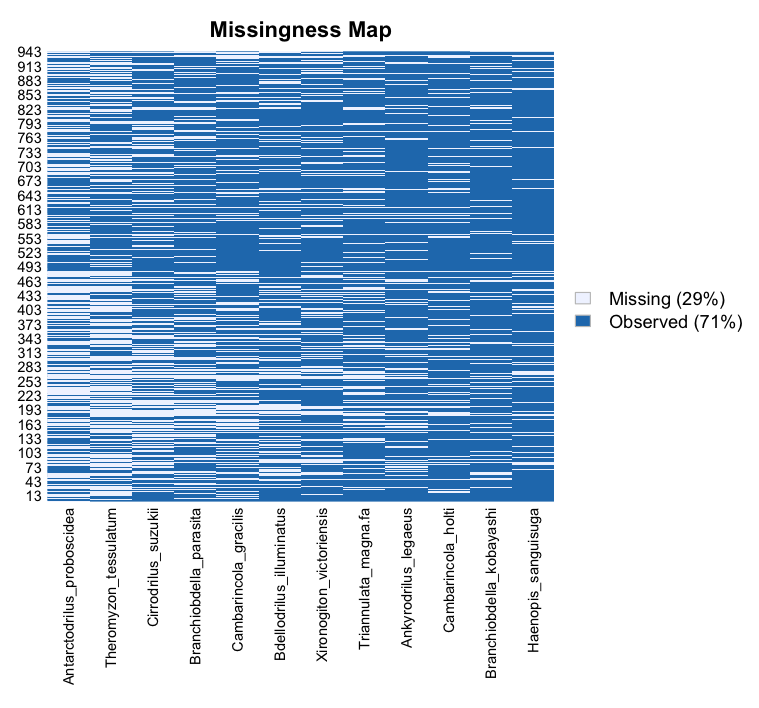

TOAST | Concatenated Alignments

What is in this section
In this section we will make concatenated alignments for IQTREE2 or other phylogenetic software and look at a rudimentary way to assess missing data patterns before diving deeper in the next section.
This section assumes you have a folder full of single gene/locus alignments
Note that TOAST can batch align your gene files for you using
MAFFT Please go back to the previous page if you need to see this function
Making a Missing Data Matrix
Missing data is a common feature of large sequence datasets. Everything from changes in coverage depth, DNA/RNA quality, probe design, assembly method, etc can result in uneven coverage of loci between species.TOAST provides a suite of functions to both explore missing data and reassemble alignments based on user determined thresholds of acceptable representation.We will use the missing_data.tsv file distributed with TOAST in the examples in this section.
Note that you can use the following code to generate a .csv or .tsv file (depending on your preference) of missing data patterns from ANY set of FASTA files in a directory with the following function
setwd("~/Documents/TOAST/concatenatedAnalysis/")
missing<-MissingDataTable(aligned_dir = "~/Documents/TOAST/AlignedLoci/")
write.csv(missing, file="missing_data.csv")
Visualizing General Missing Data Patterns
Part of the orthology assembly steps in both sections 2 and 3 was used to generate .csv file entitled "missing_data.csv" that is distributed with this software. We will use this file throughout this section. Let's begin by reading it into memory. Note you may need to change the path depending on where you downloaded this.
missing<-read.csv("/toast/sample_data/missing_data.csv", header=TRUE)
With this file we can begin to explore coarse missing data patterns.
If you look at the distributed file, you have probably realized that ANY delimited file of data presence/absence can be used with the following visualization functions (just needs data and NA for no data). This includes phenotypic trait data, behavioural observations, etc!
Now you have no excuse to not look at missing data patterns anymore!
note that this data has the loci as a column. Let's quickly remove these. Your data may not need this, but this pops up often so why not cover it here. 
missing2<-missing[,-1]

Now we can start by visualizing a missing data matrix for this dataset using the mismap function from the R package Amelia
library(Amelia)
par(mar = c(10, 2, 4, 4) + 0.1, oma= c(7, 1, 1, .5) + 0.1)
missmap(missing2, rank.order=FALSE, las=2, cex.axis=0.8)
Note that later we can use TOAST functions to order this in the order we would like based on a tree, but for now we will use the default The above gives us a snapshot of how missing data are distributed
Concatenated Alignments
It is very easy to generate a concatenated alignment along with a corresponding file that provides the locations of each locus in the alignmentThese files are generated by toast for direct input into IQTREE2. The partitions file is in nexus format and the alignment in phylip. Note that TOAST has utilities for converting between filetypes that are covered later in this tutorial.
To generate a concatenated alignment you need the directory where your single locus alignments are stored, and the missing object we created above. As you will see in a moment, TOAST can also assemble based on missing data thresholds.
To begin, simply run these two lines of code to generate the files.SuperAlign("path_to_aligned_directory", missing_df = missing)
PartitionTable("path_to_aligned_directory", missing_df = missing)
Concatenated Alignments with a Missing Data Threshold
In case you wish to generate alignments based on a criteria of no more than 100 or no more than 400 missing loci per taxa... you can! Simply create a new directory on your laptop where you wan to store the individual fasta files that meet the criteria, and then follow the code belowYou may also be interested in simply knowing which taxa have complete coverage of all orthologs.
#create a second set of fasta files with taxa that have less than 400 missing loci
#You need to make a new file on your HD called "Fasta_400_missing"
#Set the path here
tff<-"Yourpath/goes/here/Fasta_400_missing"
#Change this number for different thresholds
ThresholdDataTable(missing, threshold=400)->threshold_df
ThresholdExtract(aligned_dir=ad, missing_df=threshold_df, threshold_fasta_folder=tff)
setwd(tff)
missing<-MissingDataTable(aligned_dir = tff)
write.csv(missing, file="missing_data.csv")
SuperAlign(aligned_dir=tff, missing)
PartitionTable(aligned_dir=tff, missing)
Next Section: Missing Data Visualization
Skip to: Gene tree based filtration
Skip to: Utilities | Interactive Plots
Back to: Installation
Back to: TOAST main page